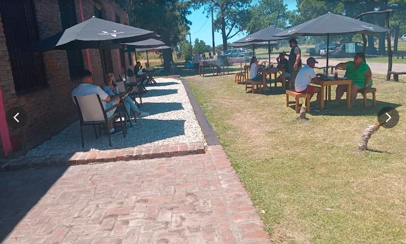
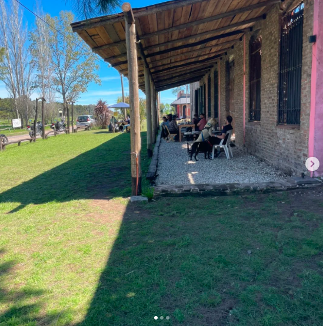
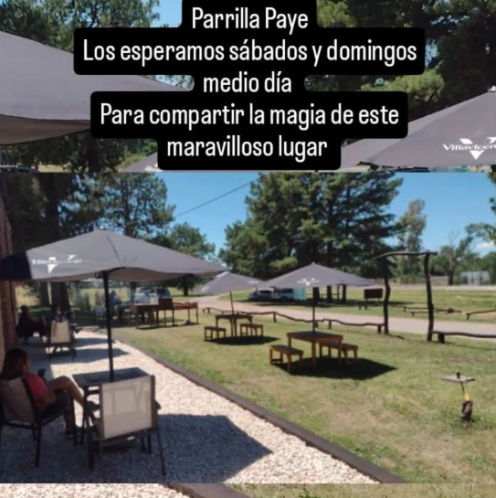
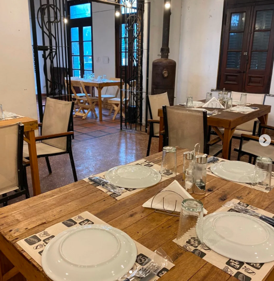
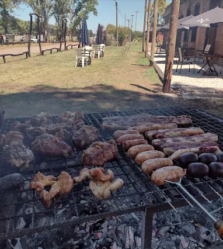

Entrada

Fuego y tradición
Asadores criollos. Música en vivo. Mesas bajo los árboles.

Nuestra historia
Parrilla PAYÉ se presenta como una opción gastronómica que recupera la esencia de las paradas ruteras de antes. Su nombre, que en guaraní evoca un hechizo o un amuleto, parece ser una declaración de intenciones: encantar a los comensales a través de la simpleza y el sabor auténtico de la parrilla argentina.
Reservar por WhatsAppCarta


